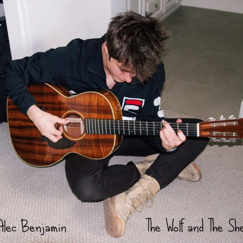

ALEC
Alec Benjamin é um cantor e compositor pop norte-americano nascido em 28 de maio de 1994 no Arizona.
Depois de lançar um EP mixtape chamado America em 2013, ele gravou seu single de estreia, "Paper Crown", em seu dormitório na Universidade do Sul da Califórnia, lançando-o em 2014.
O artista é mais conhecido pela música "Let Me Down Slowly". Além de seu projeto solo, Benjamin encontrou sucesso em composições com artistas como Jon Bellion. Entre suas referências musicais, Alec já revelou que é fortemente influenciado por artistas como Eminem, John Mayer, Paul Simon e Ben Gibbard.
benjamin
O primeiro Single
PAPER CROWN
Mais
Tocadas
Let me Down Slowly
Water Fountain
Let me Down Slowly

Let me Down Slowly